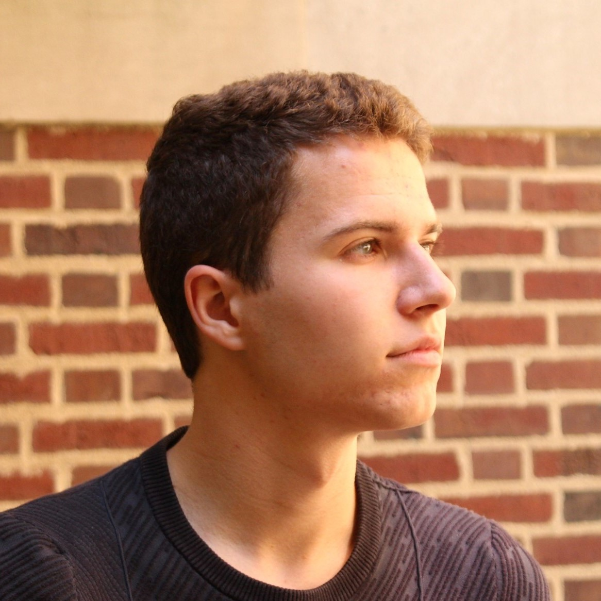

CONTACT
rms6@illinois.edu
(708) 606-7681


ROBBIE SIECZKOWSKI
Informatics Scholar ◦ VR Developer ◦ Creative Mind
Robbie Sieczkowski is a first-year PhD student at UIUC.
He is currently exploring advanced coursework and research across departments ranging from Game Studies to Media and Cinema Studies to Information Sciences.
He holds positions as a TA for both film production and game studies courses and as the Academic Advisor at UIUC's VR Club.
Over the summer, he will be working at a first-of-its-kind student-run game studio on campus as well as pushing to publish his first independent paper.
In his free time, he runs ultramarathons, plays guitar and keyboard, and will be creating one short film each year until his hands give out.
See Robbie's university page here.
ACADEMIC WORK
"A 360-degree experiment in deformation with The Young Girls of Rochefort (1967)"
A 360° videographic essay about the camera as presence, or in other words, the camera as "being there." Through deformation and remix of two musical numbers from Jacques Demy's 1967 "The Young Girls of Rochefort", the wordless essay explores how a cinematographer's spatial choices map out our relationship with the three-dimensional space of a movie set in 2D.
"The movement visualization lab VR Tool Demonstration"
A 360° compilation of the mv lab VR tool's various scenes arranged for the 2021 UIUC Undergraduate Research Symposium. Dance data created by Sarah Marks Mininsohn and Kayt MacMaster.
CREATIVE PROJECTS
"Travelogue, or: buy some furniture and give the cat a name"
Curious about the Workaway experience? I split my 2022 summer between a cave home in Spain and an animal shelter in Thailand. Here’s my short film about it.
"meditation"
A fun edit for one of the all-time coolest animation series. 3,000 views on YouTube... Mama, I made it!
CV